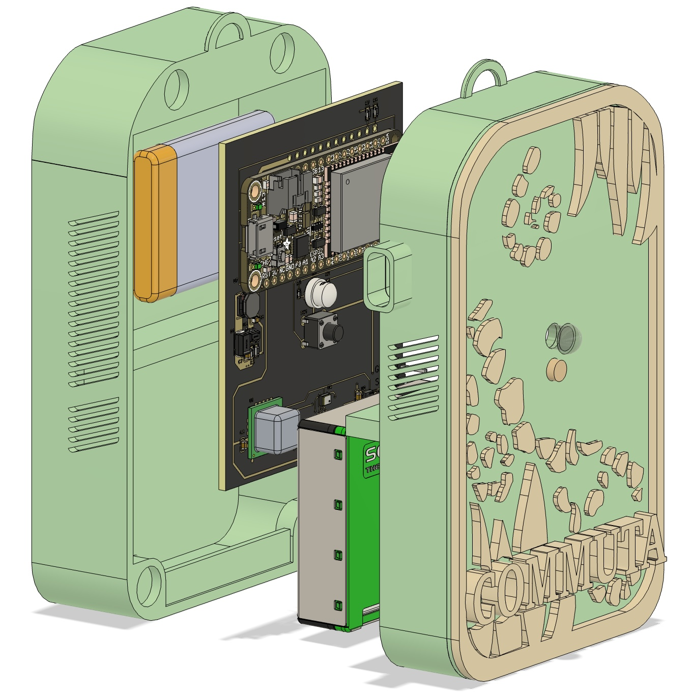
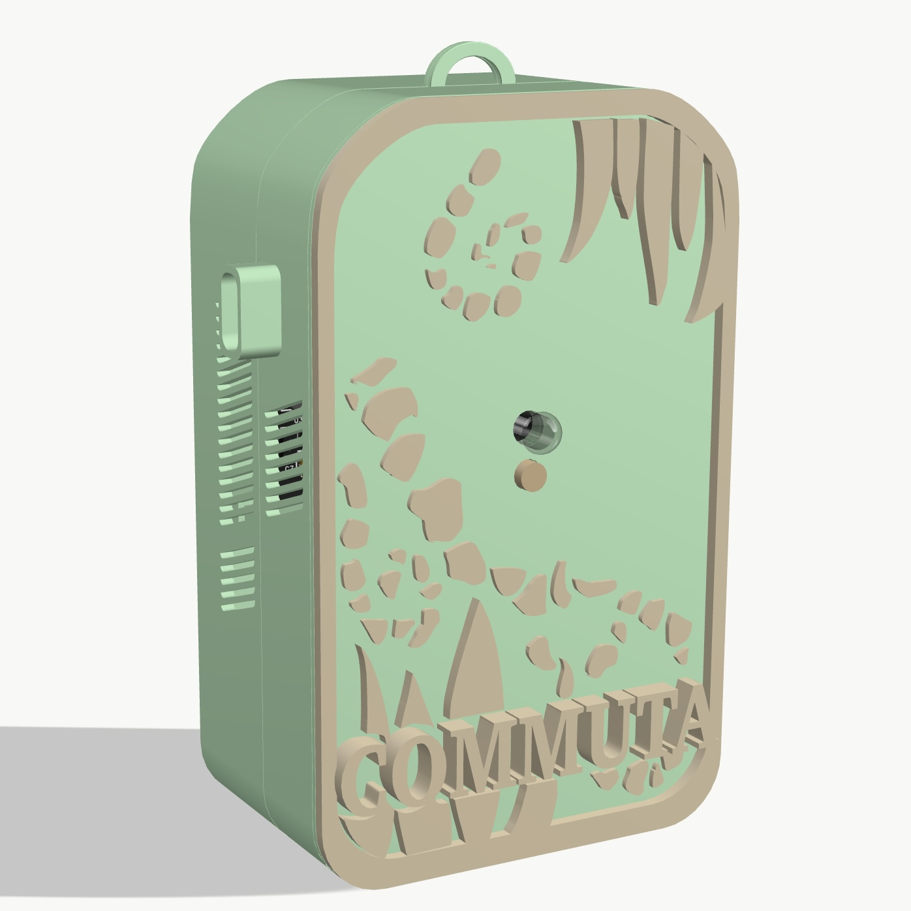
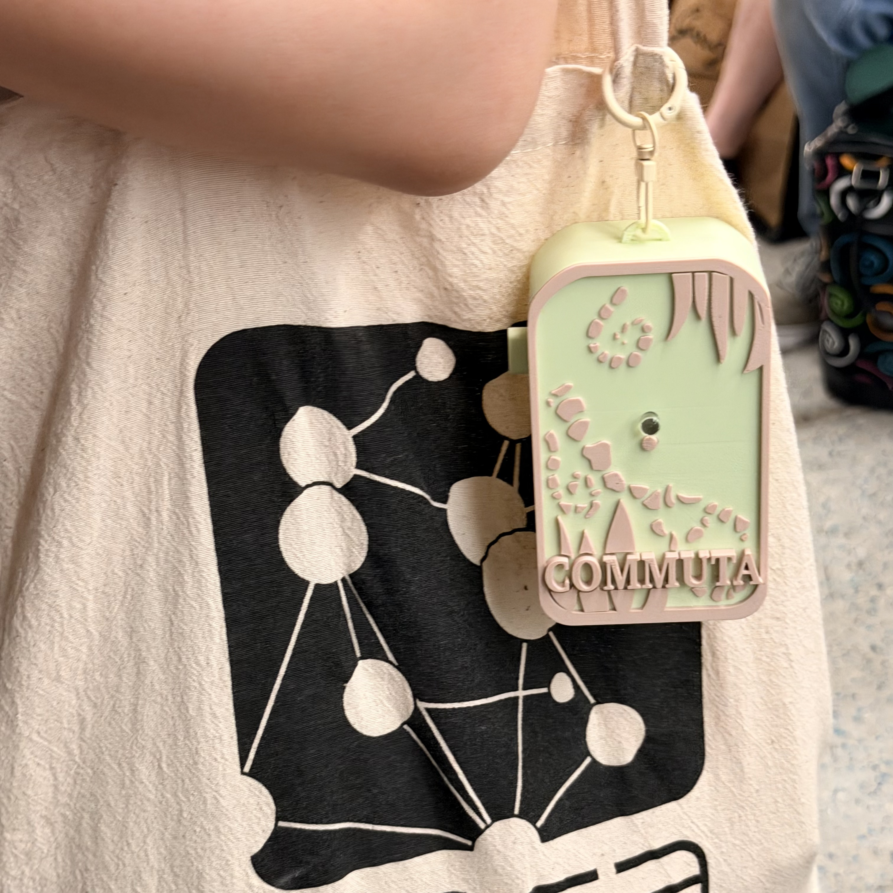
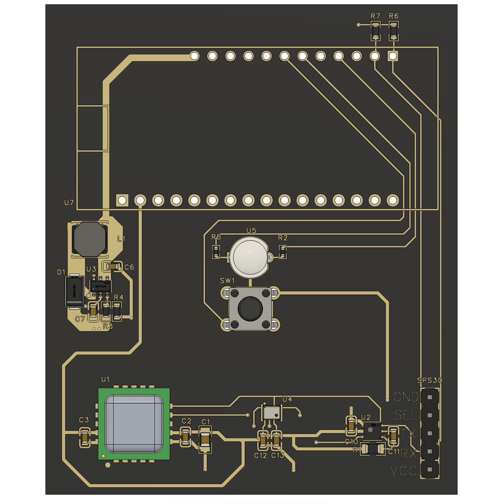
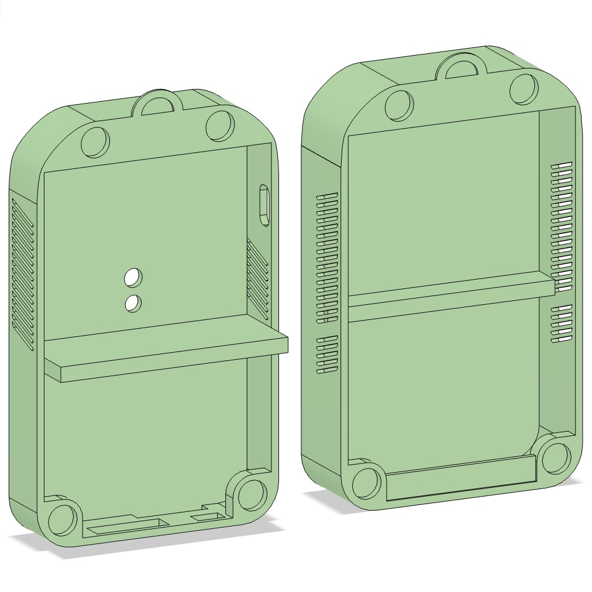

A pocket-sized instrument.
The Commuta device is a purpose-built sensing unit with five environmental sensors, a rechargeable battery, and a Bluetooth link to the companion app. The hardware is designed to be worn on a bag, run for a full commuting day, and record without interruption.
Inside the enclosure.
Two circuit boards, five sensors, a lithium-polymer battery, and a 3D-printed enclosure sized for daily wear.



Sensors and hardware.
| Component | Part | Function |
|---|---|---|
| Microcontroller | Adafruit HUZZAH32 (ESP32) | Onboard Wi-Fi and BLE, integrated LiPo charging. |
| Particulate matter | Sensirion SPS30 | PM1, PM2.5, PM4, PM10 mass concentrations. |
| CO₂ / temp / humidity | Sensirion SCD40 | Carbon dioxide, ambient temperature and relative humidity. |
| VOC / NOx | Sensirion SGP41 | Volatile organic compound and nitrogen oxide indices. |
| Barometric pressure | Infineon DPS368 | Ambient pressure; altitude reference. |
| Battery | 2000 mAh LiPo | Rechargeable via USB-C on the microcontroller. |
| Interface | Bi-colour LED, tactile button | Long-press power on / off; status indication. |
Custom PCB, two chambers.
A dedicated printed circuit board separates heat-generating electronics from the sensor array, protecting readings from self-heating and outgassing.


Streamed, buffered, resilient.
Bluetooth Low Energy
A 40-byte sample packet is sent to the app every ten seconds over BLE. Low power, no pairing, and works in the background on the phone.
On-device buffer
If the phone is out of range or the app is closed, the device writes samples to flash storage in rotating segment files. Roughly three days of buffered data.
Sequence-safe sync
Each sample carries a sequence number, so the app can rebuild a gapless timeline the moment it reconnects.